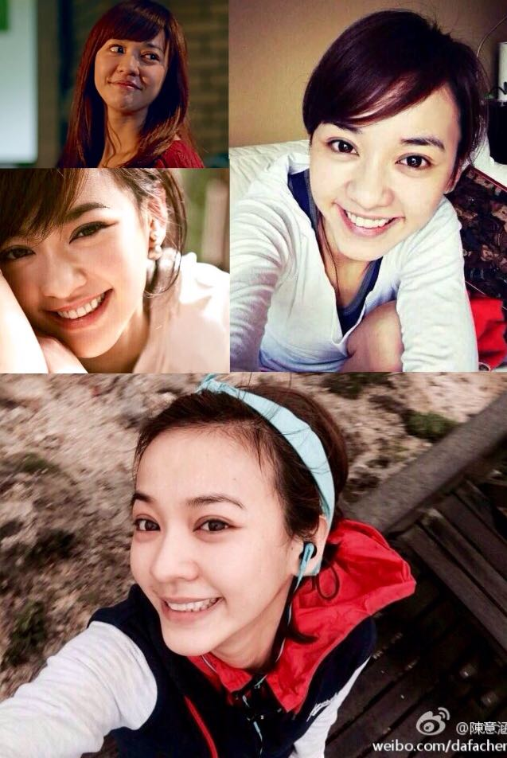
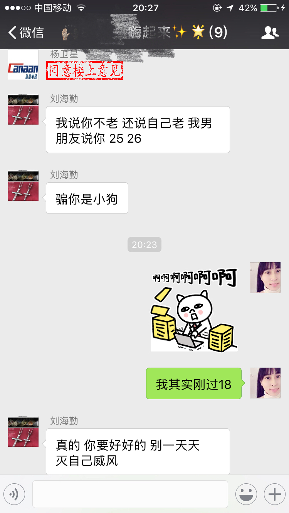

正文: 陈意涵1982
那些高中生说自己长得像小学生的就算了好吗？都没有到老的年纪，有什么显不显嫩的，我工作第七、八年的时候还被人以为是大学生我会告诉你们吗＼（＞o＜）／反正当别人听到我说自己的出身年份后，他们的反应一般就是你不是在跟我开玩笑吧。
最近总觉得身体很虚弱，毕竟年纪摆在那儿了，去看医生的时候，我对照自己的症状问医生，我不会是糖尿病吧？原本一脸郑重的医生顿时流露出一种你是在逗比吗的表情，说，不会，你那么年轻，说着翻到我的病历本封面，一看到我的年龄，他那副觉得我好笑的表情竟然消失了，说，给你验个生化全套。果然，童颜可以有，但数字是骗不了人的。
末，自己的状态自己知道就好，别人的话大多带点恭维成份，各位答主别太认真了。我81年的